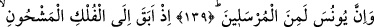
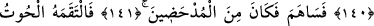
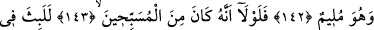
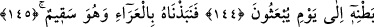
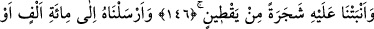
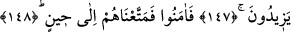

EĞER
ALLAH’I TESBİH EDENLERDEN
OLMASAYDI
139. Doğrusu Yunus da gönderilen peygamberlerdendi.
140. Hani o, dolu bir gemiye binip kaçmıştı.
141. Gemide olanlarla karşılıklı kur’a çektiler de kaybedenlerden oldu.
142. Yunus kendini kınayıp dururken onu bir balık yuttu.
143, 144. Eğer Allah’ı tesbih edenlerden olmasaydı, tekrar dirilecekleri güne
kadar onun karnında kalırdı.
145. Halsiz bir vaziyette kendisini dışarı çıkardık.
146. Ve üstüne (gölge yapması için) kabak türünden geniş yapraklı bir nebat
bitirdik.
147. Onu, yüz bin veya daha çok kişiye peygamber olarak gönderdik.
148. Sonunda ona iman ettiler, bunun üzerine biz de onları bir süreye kadar
yaşattık.
“Doğrusu” Mettâ oğlu “Yûnus da” Irak’ın Ninova (Nînavî) bölgesinde Semud
kavminden geri kalanlara “gönderilen peygamberlerdendi.”
Mettâ, Yunus (a.s.)’ın babasının yahut annesinin ismidir. Keşfü’l-esrâr’da der ki:
“Yunus (a.s.)’ın babasının adı Mettâ; annesinin adı ise Tencîs’tir.” Envârü’l-meşârik’te
der ki: “Yunus (a.s.) Hud (a.s.)’ın evlatlarındandır.” Yunus (a.s.) yine Kur’an’ın
ifadesiyle “Zünnûn” ve “Sâhibü’l-hût” (balık sahibi) olarak tanınır. Zira balık onu
yutmuştur.
Bir de Zünnûn-ı Mısrî vardır ki o bu ümmetin evliyasından bir zattır. Zünnûn-i
Mısrî’ye Zünnûn denilmesinin hikayesi şöyledir: Bu zat bir toplulukla beraber gemiye
biner. Yolculardan biri yakutunu kaybeder. Tüm aramalara rağmen bulamaz. Sonunda
yakutu bu garip adamın çalmış olduğunu düşünürler. Adam kendisine yapılan bu itham
ve suçlamayı kabul etmez. Yemin eder, fakat yine bu zâtı kabul ve tasdik etmezler.